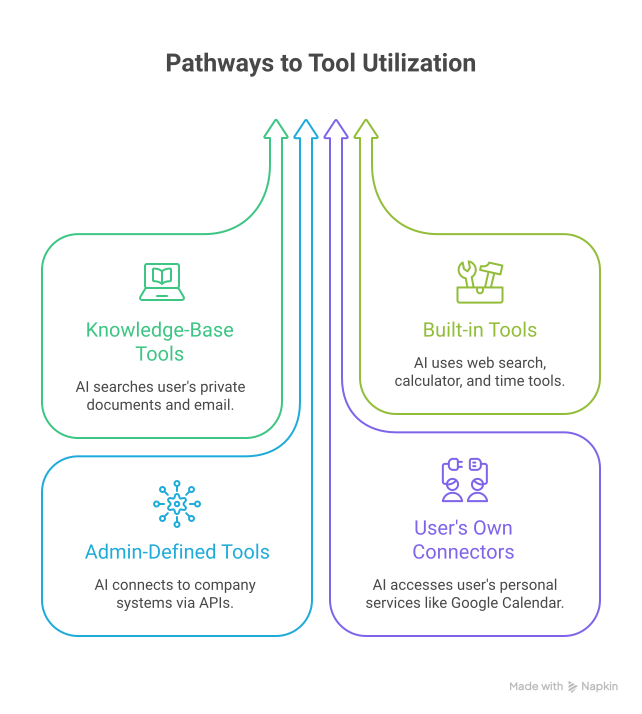
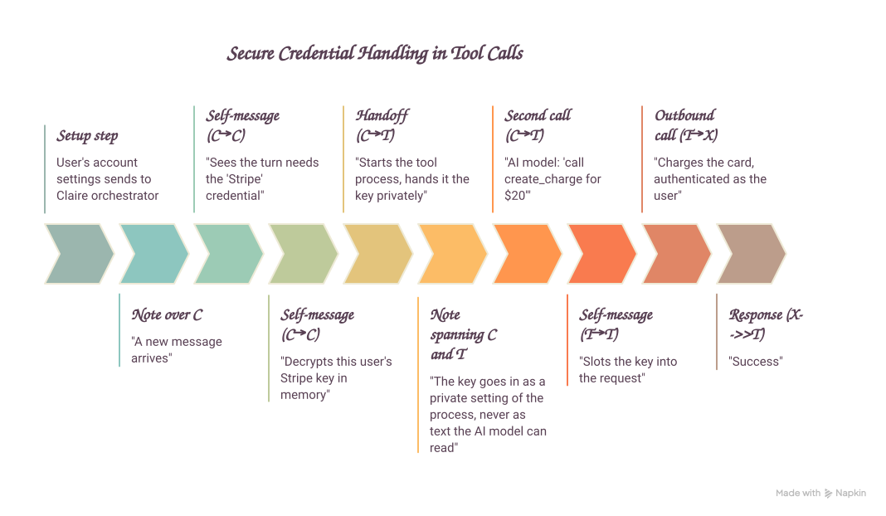

Tool access & skill gating
This doc explains exactly when a tool gets offered to Claire on a given chat turn —
in particular, what it means to gate a tool behind a skill (skill_code), when a
skill counts as "active" for a turn, and what happens when a skill is referenced but
the calling user doesn't have it installed. It's written for whoever assigns tools
and skills to an instance (admins) and whoever authors them for this catalog
(see adding-tools.md and writing-skills.md
for authoring). The mechanics here are the Hub's actual runtime behavior — sourced
from claire-hub's
admin-defined-tools.md
and
installed-skills.md,
which remain the authoritative references if you need more detail than this page
gives.
The short version
A custom tool is offered to the model on a turn only when all four of these hold:
EXTERNAL_TOOLS_ENABLED=trueon the Hub (an instance-wide switch; off by default — CRUD and listing work regardless, this only gates execution).- The tool's assignment status is
active(the install round-trip to that instance succeeded). - The assignment's
is_enabledistrue. - Its
skill_codeis blank, or the skill it names is active for this turn.
A skill is "active for this turn" when the Hub's selection logic includes it in
the set of skills it applies to that turn — see How a skill becomes "active" for a
turn below. That set can only ever contain
skills the calling user has installed — nothing else. Builtin tools (web search,
calculator, etc.) are governed only by their own is_enabled and their own
skill_code; they ignore EXTERNAL_TOOLS_ENABLED entirely.
What skill_code actually gates
skill_code lives on the tool assignment (ClaireInstanceTool.skill_code), not
in the tool's own manifest — the same manifest can be assigned to one instance
wide-open (skill_code: "") and to another gated behind a skill. Leaving it blank
means "offered to everyone on the instance by default," subject to the other three
gates above. Setting it to a skill's code narrows that down to exactly the users
who have that skill installed and on the turns where it's selected.
This is the main lever for controlling who can reach a sensitive or shared-identity
tool: install the skill only for the people who should have it, then gate the tool
behind that skill's code. See the Security sections in
slack/README.md for a concrete example — the shared Slack
tools are meant to be assigned with a skill_code set precisely so that gating
narrows exposure down to the people who have the corresponding skill installed,
instead of being offered to every user on the instance.
How a skill becomes "active" for a turn
Selection (select_skill_codes(installed, question, explicit_skill, mode)) only
ever chooses from the calling user's installed skills — a skill that isn't
installed for that user can never be selected, full stop. Given that, which skills
get selected depends on how the turn was started:
| Caller | Mode | What gets selected |
|---|---|---|
API call with an explicit skill parameter |
— | Exactly that one skill. |
Ordinary chat, no explicit skill parameter |
auto |
Every skill named as /code in the message; if none are named, every skill the user has installed — the model is left to decide which one's guidance (and any tool it gates) is actually relevant. |
| Scheduled cron run | explicit |
Only the skills named as /code in the cron prompt — there is no "select everything installed" fallback for cron. |
| — | off |
No skills at all. |
The important consequence: in ordinary chat, you don't have to type /skill-code
for a skill (or a tool it gates) to be available. If the user doesn't name any
skill explicitly, every skill they have installed is selected automatically, and a
tool gated to any one of those skills is offered on that turn. Requiring an explicit
/code mention is a cron-only behavior.
/code matching is exact and looks for a leading slash that isn't part of a URL or
path ((?<![:/\w])/([A-Za-z0-9_-]{2,})). A named selection is capped at 5 skills per
turn; the "select everything installed" fallback is capped at 100.
What happens if a skill is referenced but the user doesn't have it
"Doesn't have it" means it isn't in that user's installed set — skills are per-user, not per-instance; one user having a skill installed never grants it to anyone else on the same instance. What happens next depends on how it was referenced:
- Explicit API request (
skillparameter set to a code the user hasn't installed): the request fails outright with HTTP 404. - Named with
/codein an ordinary chat message: no error is raised anywhere. The match against installed skills simply fails, so that name is logged and silently ignored — from the user's point of view it's as if they never typed it. If no other skill was named either, the turn falls through to the "select everything installed" default instead. - Named with
/codein a cron prompt: same silent-ignore behavior, but there is no fallback for cron — the run just proceeds without that skill (and without any tool gated behind it), with nothing but a log line to show it was skipped.
In every case, a tool gated to that skill's skill_code stays hidden: it can only
ever be exposed by a skill the calling user actually has installed, never by one
they merely typed the name of.
Practical guidance
- If a tool must only reach specific people, gate it with
skill_codeand control access purely through who has that skill installed — don't rely on the model refusing to call it, and don't assume a user typing/some-other-skill's code will ever reach it. - If you want a skill-gated tool to actually get used, remember it can be
selected two ways: an explicit
/codemention, or silently via the "select everything installed" fallback when the user names nothing. Write the skill's invocation paragraph (seewriting-skills.md) so the model can tell from context alone when it applies — don't assume the user will always type the slash command. -
Don't treat an unrecognized
/codeas an error condition for the user — it fails silently by design. If you need to confirm a skill is actually installed and reachable, check the Hub directly rather than inferring it from chat behavior:curl -s -H "X-Hub-Secret: $HUB_SECRET" \ "$HUB/api/v1/users/
/skills" | jq '.[].code' - For a tool that never seems to get called even though its assignment shows active, walk the four gates in The short version in order — in practice the most common misses areEXTERNAL_TOOLS_ENABLEDbeing off on the Hub,is_enabledfalse on the assignment, or the gating skill simply not being installed for the user who's testing it.
How Claire uses tools, and how it uses your credentials without ever seeing them
Audience: product, and anyone who needs to explain Claire's tool-calling and its security story without reading code. In one line: Claire is an AI assistant that can call tools during a conversation; the tools that touch the internet or a private account run outside the AI, and a user's real passwords and API keys are handed to those tools directly — the AI model itself never sees them.
1. The mental model
Think of Claire as having three separate layers:
| Layer | What it is | What it can see |
|---|---|---|
| The AI model | The language model that reads the question and writes the answer. Can be a local model or a cloud model (OpenAI, Google, etc.). | The user's question, the conversation so far, the list of tools available and what each one is for, and the results tools return. |
| The orchestrator | Claire's own software that runs each conversation turn. It decides which tools to offer, runs them when the model asks, and passes results back. | Everything — but it is our trusted code, not a third party. |
| The tools | Small, isolated helper programs that actually do things: search the web, query a knowledge base, call a CRM, charge a card. | Only the specific inputs for one task, plus any credential the orchestrator injects for that one call. |
The key idea: the AI model is treated as untrusted. Anything the model can see could end up with a cloud AI provider, in a log, or be extracted by a cleverly worded message ("prompt injection"). So secrets are kept in the orchestrator and tool layers, never in the model layer.
2. How a conversation turn works
Every time a user sends a message:
- Claire assembles the turn. It looks up which knowledge base, which skills, and which tools apply to this user and this instance, and builds a fresh working context. Nothing is carried over invisibly — each turn is rebuilt from scratch.
- Claire picks a model. It tries the configured cloud models in priority order; if those are unavailable it falls back to the local model. This is automatic and invisible to the user.
- The model works the problem. It may answer directly, or it may decide it needs a tool. If so, it says "call tool X with these inputs." Claire runs the tool, gives the model the result, and the model continues. This repeats until the model has a final answer.
- Claire shapes the answer. It formats the response, attaches citations to any source documents that were used, and returns it.
- Claire logs the turn — counts and timings only, never the message text.
Claire keeps no long-term memory of its own; conversation history is stored by the main product, not the AI engine.
3. The kinds of tools
Claire can offer four kinds of tools in a turn. The model calls all of them the same way; they differ in where they run and how much we trust them.

- Knowledge-base tools run inside Claire and only ever touch one user's isolated data store. One tenant can never reach another tenant's data — they are physically separate stores.
- Built-in tools ship with Claire, are first-party code, and are safe by default. An admin can switch any of them off for an instance.
- Admin-defined tools are configured by an org admin: "Claire, you can call our order system at this address." They are described by a simple configuration file, not custom code (with an advanced option for teams that want to bring their own integration). These are off by default and must be explicitly enabled.
- User connectors are things an individual user has linked to their own account.
When is a tool actually offered?
A tool shows up in a turn only when it is enabled for the instance, switched on, and — if it is tied to a specific skill — that skill is active for the turn. Turning a tool on or off takes effect on the very next message.
4. Two safety guarantees at the boundary
Everything that could be risky — calling the internet, touching a private account — happens in an isolated helper process, not inside Claire's core. Two rules hold at that boundary:
Guarantee 1: the AI can never act as another user
Every tool call is stamped with the verified identity of the person who is chatting, taken from their authenticated session. If the AI model tries to specify whose data to act on, that value is thrown away and replaced with the real one. There is no way for the model to make a tool act as someone else.
Guarantee 2: the AI never sees credentials
This is the important one for the product story.
5. How Claire uses a credential without the model seeing it
The problem
Some tools need to authenticate — an API key for a CRM, an access token for Google, a billing key for Stripe. The naive design would be to let the AI "look up" the key and put it in the request. That is exactly what we do not do, because the moment a key is visible to the model it can leak to the cloud provider, into logs, or via prompt injection.
The design
There is no "get my API key" tool and no place in any prompt where a credential appears. Instead:

- The user connects the account once, in their settings. The credential is encrypted immediately and only ever decrypted inside Claire's own engine — every system that relays it in between handles it as sealed, unreadable data.
- When a message arrives, before the AI model runs, Claire checks which tools this turn might use and which credentials they need. It decrypts only those, only for the user who is chatting, and only if the credential is still active and not expired.
- Claire starts the tool's isolated process and passes the credential to it as a private process setting — the same way an operating system hands a program its configuration. This is not part of the conversation and is not visible to the AI model.
- The AI model asks to call the tool, supplying only the business inputs (amount, order number, message text). It does not — cannot — supply the credential.
- The tool process slots the credential into the outgoing request and calls the third party. The request authenticates as the user.
- Only the result comes back to the model — "charge succeeded," "here are the 3 matching invoices" — never the credential.
If the credential is missing or expired
The tool call fails cleanly with a message like "this tool needs your Stripe credential; connect the account in your settings." The model relays that to the user. No request is attempted.
Who can see the credential in plain form?
| Party | Sees it? |
|---|---|
| The AI model / cloud AI provider | No — never in the prompt, the tool list, the tool inputs, or the results |
| Claire's application logs | No |
| The systems that relay it from settings to the instance | No — they only ever hold the encrypted form |
| A different customer's Claire, or a different user on the same instance | No — decryption is scoped to one user, one instance |
| The third-party service being called | Yes — that is the entire point; the request is meant to authenticate as the user |
| Stored on disk | Only encrypted |
Isolation between users
A tool that uses a credential runs in a separate process per user, carrying only that user's keys. Tools that need no credential share one common process. Rotating or removing a credential immediately retires the processes that held it, so the next message picks up the change.
6. The one-paragraph version for a deck
Claire can call tools mid-conversation — searching a user's documents, looking something up on the web, or reaching into a connected business system. The tools that touch the outside world run in isolated sandboxes, never inside the AI. Two hard guarantees hold: the AI can never make a tool act as a different user, and the AI never sees a credential. When a user connects an account, the key is encrypted and only ever unlocked inside Claire's own engine; at call time it is handed straight to the sandboxed tool as a private setting and slotted into the outbound request there. The AI model only ever sees the business inputs it chose and the result that comes back — an API key never appears in a prompt, a log, or a model's context, which also means it can't be extracted by prompt injection.